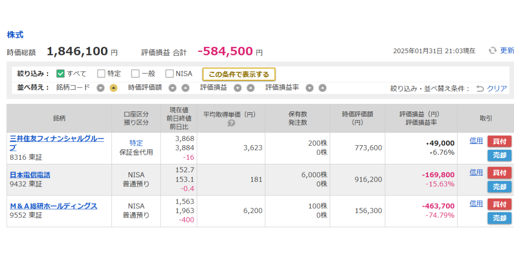

M&A総研、崖っぷち決算！
塩漬け投資家（私）の地獄絵図シナリオ
PR用
M&A総研ホールディングス（9552）の決算が発表され、投資家（私）に衝撃が走った。営業利益は前期比約50%減。これを受けて株価も大幅に下落し、ホルダーにとっては地獄のような展開となった。 私も500株を保有しており、決算前の評価額は約100万円（すでに含み損60万円程度）。今回の暴落で、資産が大きく目減りする結果となった。

1. 決算内容の衝撃と市場の反応
M&A総研はこれまで高成長を続けてきたが、今回の決算はその流れに大きなブレーキをかける形となった。営業利益が前期比で約50%減少したことは、市場にとって予想以上のネガティブサプライズとなり、発表後の株価は大きく下落した。市場は成長株に対して高い期待を抱くものの、その期待が崩れた瞬間の反動は凄まじい。M&A総研の株価は短期的に急落し、損切りをする投資家が続出。だが、筆者はあえて「塩漬け」を選択した。
2. 決算前の買い残約230万株が示す不安要素
決算前のデータによると、M&A総研の買い残高は約230万株に達していた。この水準は決算発表前から下落が続いており、多くの投資家がナンピン買いを行った結果と考えられるが、それが必ずしも良い兆候とは言えない。買い残が多いということは、将来的に売り圧力として働く可能性が高く、株価の回復を鈍化させる要因となり得る。また、決算から３営業日程度は、信用買いの追証によるさらなる株価の下落リスクも視野に入れる必要がある。
3. 塩漬け投資家の地獄絵図とは？
今回の決算を受け、今後考えられる「最悪のシナリオ」を想定してみる- 株価のさらなる下落
・業績悪化のインパクトが尾を引き、さらなる投げ売りが発生。
・M&A業界全体の不透明感が高まり、市場全体で関連株が売られる。
・現在の株価水準（約1,500円台）から、1,000円台、さらにはそれ以下への下落リスク。 - 長期間の株価低迷
・低迷した業績が回復するまで、長い時間がかかる。
・投資家の信頼が損なわれ、PER（株価収益率）の回復にも時間を要する。
・M&A市場の成長鈍化または競争激化により、会社自体の成長余地が限定的になる。 - 最悪のケース
・株価の低迷が長期化すれば、1株当たりの価値を調整するために株式併合が実施される可能性も。
・すでに、オペレーティング・リース事業に参入を決定しており、本業が疎かになる可能性。
・成長鈍化から、さらに赤字へ転落する可能性。
4. 塩漬けを選んだ理由と今後の戦略
私がこの状況で「塩漬け」を選んだのは、PERが同業他社の同程度の利益と比べて割安になりつつあるからだ。 ただし、実際は感情的に売れないだけである。- PERの観点からの割安性
同業他社と比較してPERが低下しており、相対的に割安になっている。業績が大きく悪化しない限り、この割安感が市場で評価される可能性がある。 - 短期的な売却は損失確定を意味する
今回の暴落で売却すると、損失が確定してしまう。ただただ、損失を確定したくない。損失にしたくないため、ナンピンを検討するぐらいである。 - 決算後の売られすぎによるリバウンド狙い
業績悪化が発表された後、市場が過剰反応している可能性がある。
5. 今後の投資戦略とリスク管理
塩漬けとはいえ、無策で持ち続けるわけではない。佐田さん直伝の気絶投資法（松井証券のテスタの魔法学校１＃6）を駆使して、戦略的に動く。- 成長回復の兆しをチェック
次の決算でどの程度改善できるかを見極める。 - 市場の動向を注視
M&A業界全体の環境が悪化するようなら、さらなる下落リスクを考慮。 - 平均取得単価を下げるためのナンピンも視野に
1ただし、無理に資金を投じず、慎重に判断する。
まとめ
M&A総研の決算は投資家にとって大きなショックとなった。営業利益50%減という厳しい数字は、株価にも大きなダメージを与え、今後の下落リスクも拭えない。さらに、決算前の買い残が230万株に達していたことは、将来的な売り圧力のリスクを高めている点も見逃せない。長期的な視点で見れば、M&A市場は成長余地があるため、ここで狼狽売りするよりも冷静な対応が必要だ。
塩漬け投資家としては、今後の業績回復を信じつつ、戦略的に動くことでこの「地獄」を乗り越えていくしかない。 果たして、この決断が吉と出るか、凶と出るか──。それは、未来のお楽しみである。
さあ、共に新しい一歩を踏み出しましょう！